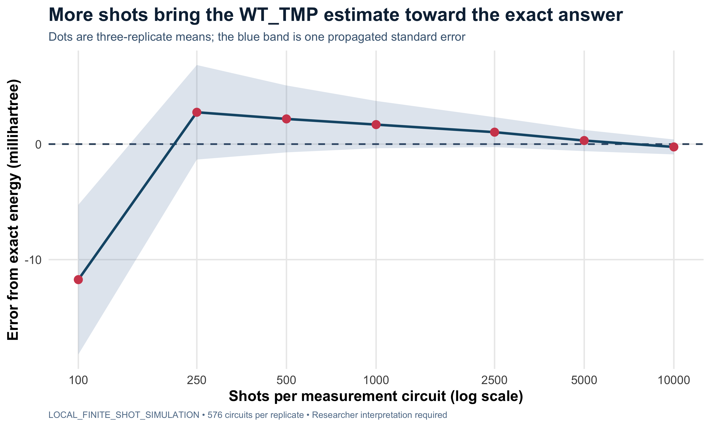
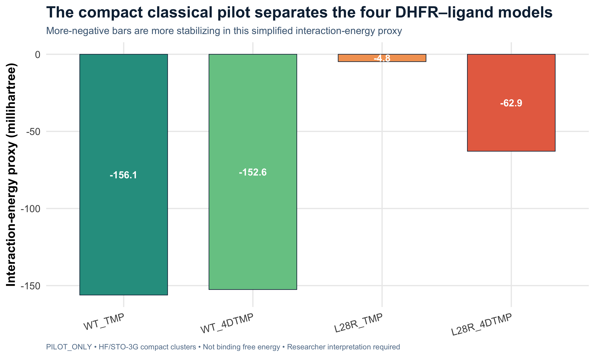
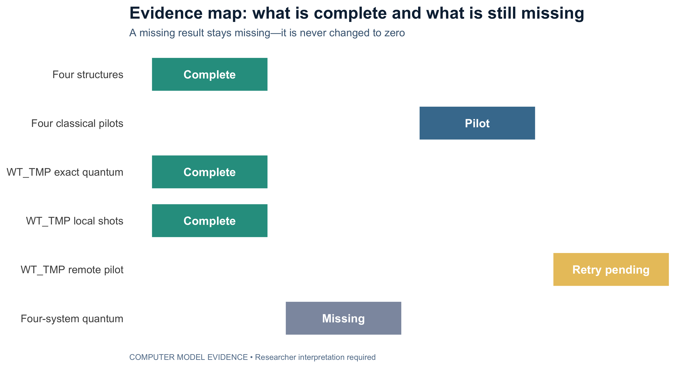

Every graph links to machine-readable source data and uses clear evidence labels.

What it means: taking more simulated measurements makes the WT_TMP answer steadier and generally closer to the exact answer. See the numbers.

What it means: the four bars are different, suggesting that the protein change does not affect both ligands in the same way in this small model. See the numbers.

What it means: some work is complete and some is still missing. This chart stops unfinished work from looking finished. See the status data.